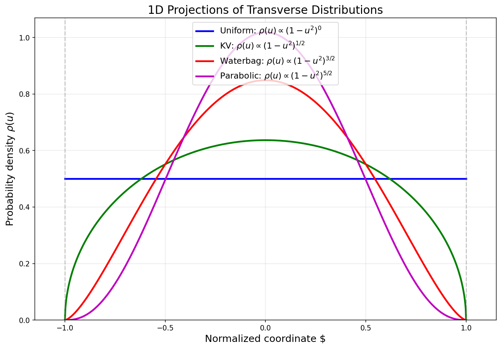
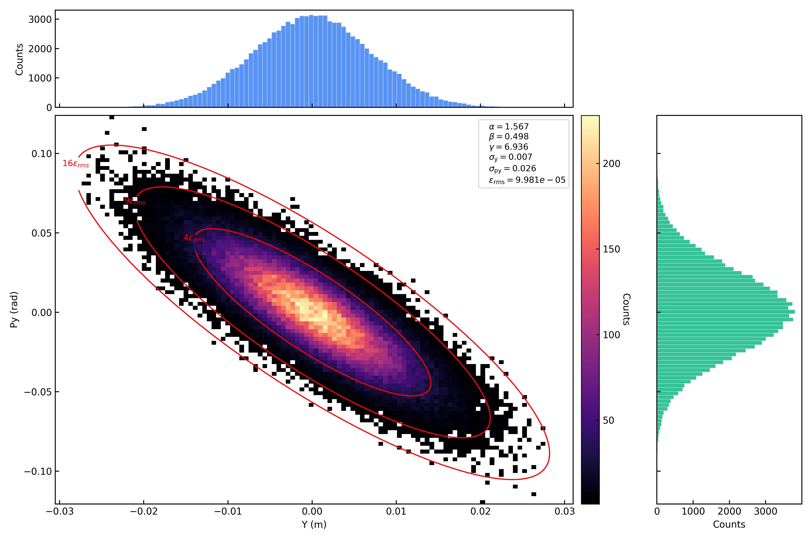
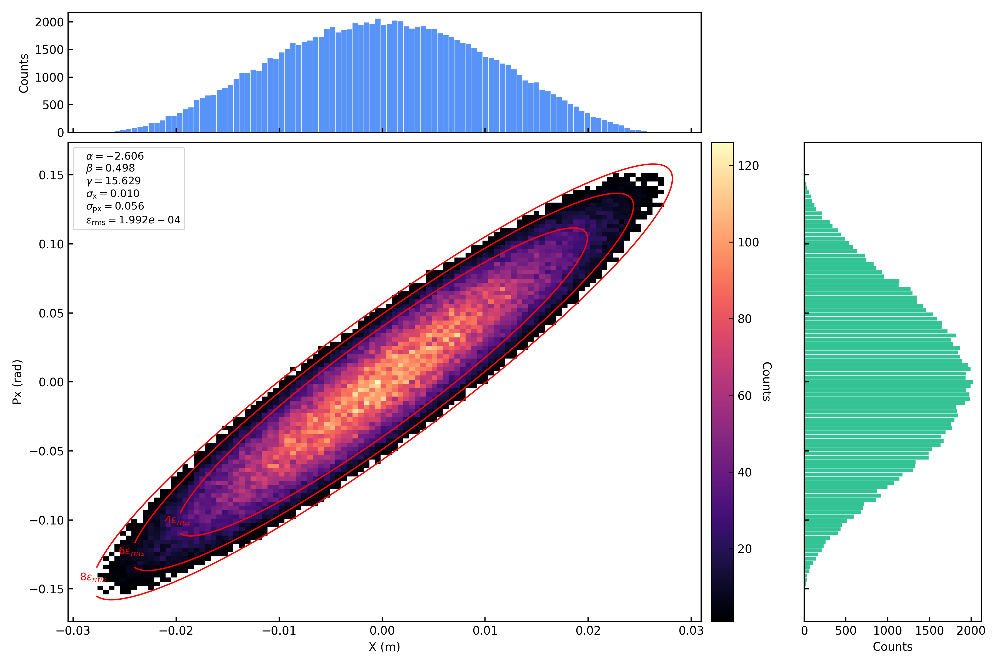
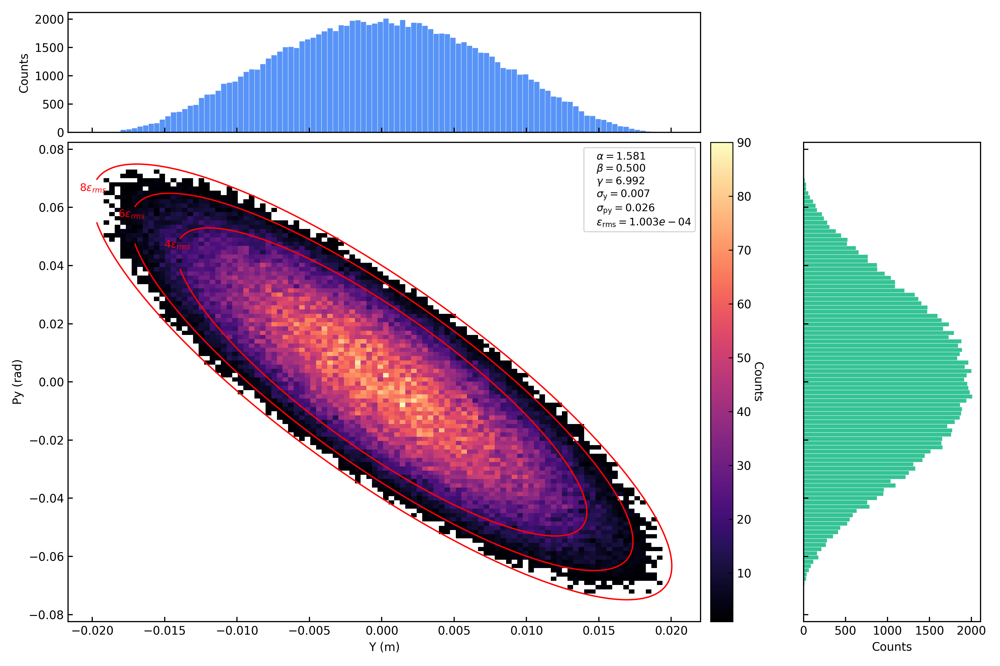
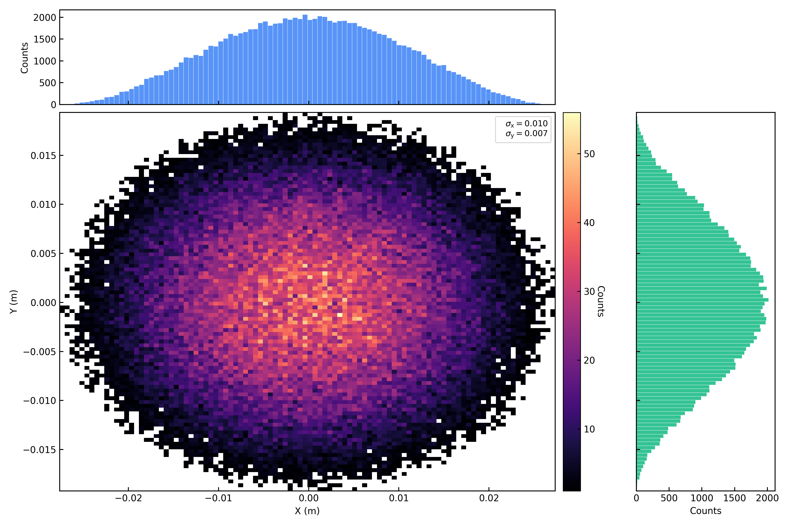
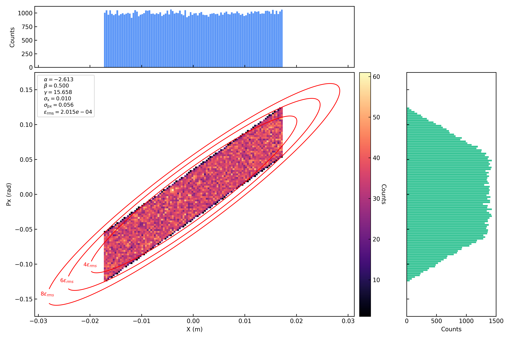
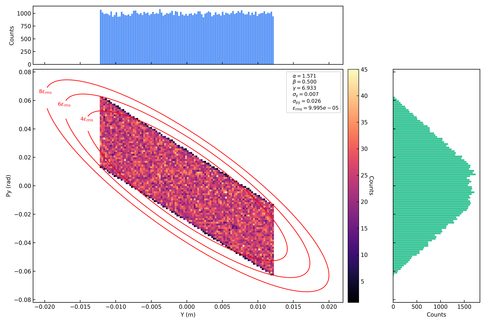
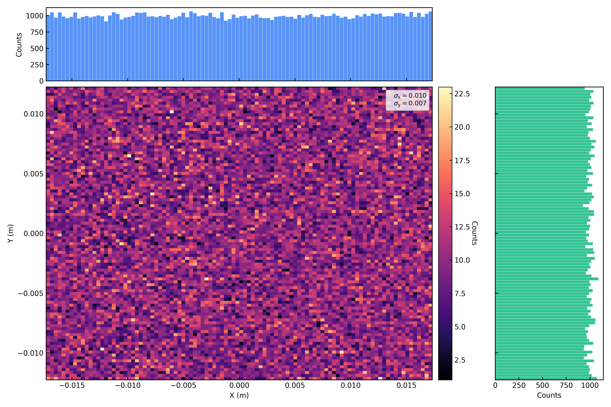

注入粒子生成（Injection）
本模块介绍 PASS 中的注入命令 Injection ，用于在模拟起始位置生成特定粒子分布并注入束流。注入命令支持为每个束团独立设置横向分布、纵向分布、束流参数、偏移等，是粒子模拟的入口环节。
本示例演示如何构建特定粒子分布。本文件中所使用输入文件及运行代码见 GitHub 示例代码 。
代码位置
源文件：
PASS/commands/injection.py类名：
Injection（继承自Command）注册名：
injection辅助类：
InjectionBunchInfo（同文件，负责单个束团的参数解析与分布生成）
接口参数
Injection 命令的参数如下表所示。其中 s 必须为 0 （注入点固定在序列起始位置）， name 由序列键名自动填入， bunch0 、 bunch1 、 … 为各束团的参数字典。
属性名 |
JSON key |
类型 |
单位 |
说明 |
|---|---|---|---|---|
|
|
float |
m |
注入位置 （必须为 0） |
|
|
str |
元件名称，由序列键名自动填入 |
|
|
|
int |
束团分组数；必须声明同样数量的 |
|
|
|
dict |
第 0 个束团的参数字典 |
|
|
|
dict |
第 1 个束团的参数字典 |
|
… |
… |
dict |
更多数量的束团参数字典 |
束团参数
每个束团以 bunch0 、 bunch1 、 … 为键，值为包含该束团全部参数的字典。参数按横向、纵向、束流、分布、偏移五组分类说明如下。
横向参数
属性名 |
JSON key |
类型 |
单位 |
说明 |
|---|---|---|---|---|
|
|
float |
水平 Twiss 参数 \(\alpha_x\) |
|
|
|
float |
垂直 Twiss 参数 \(\alpha_y\) |
|
|
|
float |
m |
水平 Twiss 参数 \(\beta_x\) |
|
|
float |
m |
垂直 Twiss 参数 \(\beta_y\) |
|
|
float |
m·rad |
水平发射度 \(\varepsilon_x\) |
|
|
float |
m·rad |
垂直发射度 \(\varepsilon_y\) |
|
|
float |
m |
水平色散函数 \(D_x\) |
|
|
float |
水平色散导数 \(D_{px}\) |
|
|
|
str |
横向分布类型，可选： |
纵向参数
属性名 |
JSON key |
类型 |
单位 |
说明 |
|---|---|---|---|---|
|
|
float |
m |
纵向束长 RMS 值 \(\sigma_z\) |
|
|
float |
动量分散 RMS 值 \(\sigma_{\delta}\) |
|
|
|
str |
纵向分布类型，可选： |
|
|
|
float |
V |
高频电压 （ |
|
|
float |
rad |
高频相位 \(\phi_s\) （ |
|
注入顶层 |
int |
从 Injection 顶层传入的束团分组数 \(h_{\mathrm{group}}\) 。它同时用于 |
|
|
|
int |
束团分组编号 \(h_{\mathrm{id}}\) ，决定固定中心 \(z_{\mathrm{center}}=h_{\mathrm{id}}C/h_{\mathrm{group}}\) |
|
|
|
float |
m |
高频腔相对于注入点的纵向位置，用于将 s_rf 处生成的分布逆向传播到 s=0 注入点 |
|
|
float |
束团级平均动量偏差 \(\delta_0\) ，叠加到每个粒子的 dp 上。与 |
|
|
|
float |
eV |
束团级动能偏差，内部转化为 |
束流参数
属性名 |
JSON key |
类型 |
单位 |
说明 |
|---|---|---|---|---|
|
|
float |
eV/u |
每核子动能 |
|
float |
真实粒子数 |
||
|
float |
宏粒子数 |
||
|
|
int |
总注入圈数 |
|
|
|
int |
注入间隔 （每 |
分布参数
属性名 |
JSON key |
类型 |
说明 |
|---|---|---|---|
|
|
bool |
是否从文件加载粒子分布 |
|
|
str |
分布文件路径 （ |
|
|
bool |
是否保存初始分布 |
|
|
list |
插入指定粒子坐标，格式为 |
偏移参数
水平偏移 （ Offset x ）和垂直偏移 （ Offset y ）结构相同，各包含以下子参数：
属性名 |
JSON key |
类型 |
说明 |
|---|---|---|---|
|
|
bool |
是否启用偏移 |
|
|
bool |
是否从文件加载偏移数据 |
|
str |
偏移数据文件路径 （ |
|
|
str |
时间列类型，可选： |
|
|
|
float |
位置偏移量 |
|
|
float |
动量偏移量 |
粒子分布类型简介
在 PASS 程序中初始粒子分布由 Injection 命令实现，在 Injection 命令中，可以单独为每个束团设置不同的分布信息。
横向粒子分布
目前 PASS 程序支持生成的横向粒子分布有 水平垂直解耦的 2D 高斯分布 、 4D KV分布 、 4D 水袋分布 、 4D 抛物线分布 、 2D 相空间均匀分布 。
其中 4D 分布是指在 4D 相空间 \((x, p_x, y, p_y)\) 中定义一个广义的超椭球边界。为了简化推导且不失一般性，我们引入 归一化坐标 ：
其中 \(a, b, c, d\) 分别是束流在对应维度上的 最大物理包络边界（硬边界） 。在此归一化坐标系下，4D 超椭球边界简化为单位超球：
下面详细介绍各横向粒子分布。对于 4D 分布，其在 1D 平面的投影具有统一的幂函数形式。设 4D 相空间中分布密度为 \(f(r^2) \propto (1-r^2)^{\alpha}\) （ alpha ge 0 ，定义在 4D 单位球 \(B^4\) 内），则对任意单一归一化坐标 \(u\) 的 1D 边缘分布为：
其中 \(n=4\) 为相空间维数。对于均匀分布在 \(n\) 维球面 \(S^{n-1}\) 上的分布（如 KV），其 1D 投影为：
各分布的 1D 投影汇总如下：
分布 |
4D密度 |
\(\alpha\) |
1D投影幂次 |
1D投影形式 |
|---|---|---|---|---|
Uniform（2D方块） |
— |
— |
0 |
\(\rho(u) = \mathrm{const}\) |
KV（ \(S^3\) 球面） |
\(\delta(r-1)\) |
— |
\(\frac{1}{2}\) |
\(\rho(u) \propto \sqrt{1-u^2}\) |
Waterbag（ \(B^4\) 均匀） |
\(1\) |
0 |
\(\frac{3}{2}\) |
\(\rho(u) \propto (1-u^2)^{3/2}\) |
Parabolic（ \(B^4\) , \(1-r^2\) ） |
\((1-r^2)^1\) |
1 |
\(\frac{5}{2}\) |
\(\rho(u) \propto (1-u^2)^{5/2}\) |
下面详细介绍各横向粒子分布：
独立2D高斯分布（Gaussian）
在 \(x-p_x\) 与 \(y-p_y\) 相空间中分别独立生成服从高斯分布的横向坐标。粒子在横向相空间中的分布采用 \(4\sigma\) 截断，即仅保留满足：
\[|x| \le 4\sigma_x, \quad |y| \le 4\sigma_y\]的粒子。
对于二维相空间高斯分布 （ \(x-p_x\) 与 \(y-p_y\) ），不同 RMS 发射度对应的粒子包含比例如下：
\(\epsilon/\epsilon_{\mathrm{rms}}\)
截断范围
保留粒子比例
1
\(1\sigma\)
39.346934029%
2
\(\sqrt{2}\sigma\)
63.212055883%
4
\(2\sigma\)
86.466471676%
6
\(\sqrt{6}\sigma\)
95.021293163%
9
\(3\sigma\)
98.889100346%
16
\(4\sigma\)
99.966453737%
因此在 \(4\sigma\) 截断条件下，粒子损失比例极低 （约 \(3.3\times10^{-4}\) ），可近似认为完整覆盖高斯尾部。
具体截断比例可通过下面的函数进行计算：
import numpy as np def fraction_by_emittance(epsilon, epsilon_rms): fraction = 1 - np.exp(-epsilon / (2 * epsilon_rms)) print(f"eps/eps_rms = {epsilon/epsilon_rms}, particle proportion = {fraction:.9%}") for epsi in (1, 2, 4, 6, 8, 9, 16, 25, 36): fraction_by_emittance(epsilon=epsi, epsilon_rms=1)4D KV（Kapchinskij-Vladimirskij）分布
在 \(x-p_x-y-p_y\) 四维相空间中生成 均匀分布在四维超椭球表面上 的粒子分布，是一种只存在于四维球壳上的理想化分布。这种分布下粒子产生的空间电荷场在束团内部是严格线性的，可以实现空间电荷问题的严格解析求解。
积分掉两个维度后，KV 分布在任意 2D 平面 （如 \(x-p_x\) 平面） 上的投影是一个均匀填充的椭圆。进一步积分掉一个维度后，KV 分布在 1D 平面的投影是一个半椭圆 （或半圆） 分布。具体推导如下：KV 分布均匀分布在 4D 超球面 \(S^3\) 上（ \(r^2 = 1\) ），对 \(u_x\) 求 1D 边缘分布需在 \(S^3\) 上对其余三个坐标积分：
\[\rho(u_x) \propto (1-u_x^2)^{\frac{n-3}{2}} = (1-u_x^2)^{\frac{1}{2}}\]即 1D 投影幂次为 \(\frac{1}{2}\) 。
Note
根据积分可得：在 \(x-p_x\) 与 \(y-p_y\) 相平面上KV分布的全发射度为RMS发射度的4倍。
即 KV 分布下所有粒子均处在 \(2\sigma\) 截断范围内。但是在程序中依然设置为保留满足：
\[|x| \le 4\sigma_x, \quad |y| \le 4\sigma_y\]的粒子。
4D 水袋（Waterbag）分布
在 \(x-p_x-y-p_y\) 四维相空间中生成 均匀分布在四维超椭球内部 的粒子分布。
积分掉两个维度后，水袋分布在任意 2D 平面 （如 \(x-p_x\) 平面） 上的投影呈抛物线分布。进一步积分掉一个维度后，水袋分布在 1D 平面的投影是一个 \(\frac{3}{2}\) 次幂抛物线型分布。具体推导如下：水袋分布均匀分布在 4D 超球 \(B^4\) 内（ \(f(r^2) = 1\) ，即 \(\alpha = 0\) ），对 \(u_x\) 求 1D 边缘分布需在 \(B^4\) 上对其余三个坐标积分，剩余部分为半径 \(\sqrt{1-u_x^2}\) 的 3D 球：
\[\rho(u_x) \propto V_3\!\left(\sqrt{1-u_x^2}\right) \propto (1-u_x^2)^{\frac{3}{2}}\]其中 \(V_3(R) \propto R^3\) 为 3D 球体积。即 1D 投影幂次为 \(\frac{3}{2}\) 。
Note
根据积分可得：在 \(x-p_x\) 与 \(y-p_y\) 相平面上水袋分布的全发射度为RMS发射度的6倍。
即水袋分布下所有粒子均处在 \(\sqrt{6}\sigma\) 截断范围内。但是在程序中依然设置为保留满足：
\[|x| \le 4\sigma_x, \quad |y| \le 4\sigma_y\]的粒子。
4D 抛物线（Parabolic）分布
在 \(x-p_x-y-p_y\) 四维相空间中生成 密度从中心向外围随着r的增加呈抛物线递减 的粒子分布，这种分布比水袋分布更贴近真实加速器中偏向中心聚集的束流。
积分掉两个维度后，抛物线分布在任意 2D 平面 （如 \(x-p_x\) 平面） 上的投影呈平方抛物线分布。进一步积分掉一个维度后，抛物线分布在 1D 平面的投影是一个 \(\frac{5}{2}\) 次幂抛物线型分布。具体推导如下：抛物线分布的 4D 密度为 \(f(r^2) \propto (1-r^2)^1\) （ \(\alpha = 1\) ），对 \(u_x\) 求 1D 边缘分布：
\[\rho(u_x) \propto (1-u_x^2)^{\frac{n-1}{2}+\alpha} = (1-u_x^2)^{\frac{3}{2}+1} = (1-u_x^2)^{\frac{5}{2}}\]即 1D 投影幂次为 \(\frac{5}{2}\) 。
Note
根据积分可得：在 \(x-p_x\) 与 \(y-p_y\) 相平面上抛物线分布的全发射度为RMS发射度的8倍。
即抛物线分布下所有粒子均处在 \(\sqrt{8}\sigma\) 截断范围内。但是在程序中依然设置为保留满足：
\[|x| \le 4\sigma_x, \quad |y| \le 4\sigma_y\]的粒子。
Uniform（均匀分布）
在 \(x-p_x\) 与 \(y-p_y\) 相空间中分别独立生成 2D 均匀方块分布。对于每个横向平面，在归一化坐标 \((u, v)\) 中于 \([-1, 1] \times [-1, 1]\) 方块区域内均匀采样，再通过 Twiss 参数映射到物理坐标。该分布的 RMS 发射度严格等于输入参数 \(\varepsilon\) ，全发射度为 RMS 发射度的 3 倍，所有粒子均处在 \(\sqrt{3}\sigma\) 截断范围内。这种分布可以模拟电子枪等产生的初始束流。
积分掉一个维度后，均匀分布在 1D 平面的投影是一个常数（均匀）分布。由于 \(u_x\) 和 \(v_x\) 独立均匀分布在 \([-1, 1]\) 上，对 \(v_x\) 积分后：
\[\rho(u_x) = \frac{1}{2} = \mathrm{const} \propto (1-u_x^2)^{0}\]即 1D 投影幂次为 \(0\) 。
纵向粒子分布
目前 PASS 程序支持生成的纵向粒子分布有 2D高斯分布 、 漂移束分布 、 匹配高频参数-纵向束长RMS值的分布 、 匹配高频参数-动量分散RMS值的分布 ：
2D高斯分布（Gaussian）
在 \(z-p_z\) 相空间中分别生成服从高斯分布的纵向坐标。粒子在纵向相空间中的分布采用 \(4\sigma\) 截断，即仅保留满足：
\[|z| \le 4\sigma_z\]的粒子。
漂移束分布（Coasting）
在 \(z-p_z\) 相空间中生成 \(z\) 服从均匀分布， \(p_z\) 服从高斯分布的纵向坐标。粒子在纵向相空间不做截断，纵向位置坐标最大为周长的一半，最小为负周长的一半。
匹配高频参数-纵向束长RMS值的分布（MatchZ）
在 \(z-p_z\) 相空间中生成同时满足高频参数及纵向束长限制 （ \(\sigma_z\) ） 的纵向坐标。粒子在纵向相空间中的分布采用 \(2\sigma\) 截断，即仅保留满足：
\[|z| \le 2\sigma_z\]的粒子。
匹配高频参数-动量分散RMS值的分布（MatchDp）
在 \(z-p_z\) 相空间中生成同时满足高频参数及动量分散限制 （ \(\sigma_{\delta}\) ） 的纵向坐标。粒子在纵向相空间中的分布采用 \(2\sigma\) 截断，即仅保留满足：
\[|z| \le 2\sigma_z\]的粒子。
多束团纵向坐标
PASS 将粒子数组中的 z 定义为相对所属束团中心的坐标 \(z_{\mathrm{rel}}\) 。每个束团的固定实验室坐标中心由分组编号给出：
注入过程不再把束团中心平移进粒子 z 数组，也不按奇偶谐波采用不同公式。生成的纵向分布直接作为 \(z_{\mathrm{rel}}\) 保存。
若分布参数定义在 RF 腔位置 \(s=s_{\mathrm{rf}}\) ，注入时仅执行一次线性逆向传播：
注入过程不对 \(z_{\mathrm{rel}}\) 做环周折叠。RFCavity 等需要绝对到达相位的元件会自行使用 \(z_{\mathrm{lab}}\)。
束团填充方案
Note
束团 ID （ bunch_id ）严格按照从 0 开始、步长 1 递增的顺序编号，由输入文件中 bunch0 、 bunch1 、 … 的键名决定。束团数量由输入文件中 bunch 键的数量决定。
harmonic_id 必须唯一，并完整覆盖 \(0,1,\ldots,h_{\mathrm{group}}-1\) 。因此输入中束团数等于 Harmonic Number ；未填充的槽位也要声明为宏粒子数为 0 的空束团。
全填充 ：所有分组都包含非零宏粒子，中心依次位于 \(0,C/h_{\mathrm{group}},\ldots,(h_{\mathrm{group}}-1)C/h_{\mathrm{group}}\)
部分填充 ：保留完整的分组编号，但将未填充槽位对应束团的宏粒子数设为 0
下图为环形布局下的束团分组示例。圆环代表加速器周长 \(C\) ，标记点为 \(z_{\mathrm{center}}\) 。分组编号按顺时针方向递增。上图为 \(h_{\mathrm{group}}=4\) 全填充；下图为 \(h_{\mathrm{group}}=5\) 部分填充，其中分组 1、3、4 由空束团占位：
色散耦合
如果注入点存在色散函数 \(D_x\) 和 \(D_{px}\) ，则在生成横向分布后自动施加色散耦合：
其中 \(\delta\) 为粒子的动量偏差。这确保了粒子分布与纵向动量分散在物理上自洽。
动量偏差
注入时可以为整个束团施加平均动量偏移 \(\delta_0\) 。粒子分布生成时 \(\delta\) 服从均值为 0 的分布（如高斯分布 \(\delta \sim \mathcal{N}(0, \sigma_\delta)\) ），施加偏移后变为 \(\delta \sim \mathcal{N}(\delta_0, \sigma_\delta)\) ，即分布中心从 0 平移到 \(\delta_0\) 。\(\delta_0\) 是叠加量，不是粒子的总 \(\delta\) 。这用于模拟注入能量偏移、参考动量偏移等场景。
支持两种输入方式（互斥，若同时为非零值则报错）：
动量偏差 （
Momentum Offset dp）：直接给出 \(\delta_0\) （无量纲，相对于参考动量的偏差）动能偏差 （
Kinetic Energy Offset (eV)）：给出 \(\Delta E\) （单位 eV），内部转化为 \(\delta_0\)
精确转换公式
动能偏差 \(\Delta E\) 到动量偏差 \(\delta_0\) 的转换，采用精确的相对论能量-动量关系：
其中 \(E\) 为总能量（ \(E = E_k + m_0\) ）， \(p\) 为动量， \(m_0\) 为静止质量。参考粒子（无偏差）的参数为：
施加动能偏差 \(\Delta E\) 后，粒子总能量变为 \(E_1 = E_0 + \Delta E\) ，对应动量为：
因此动量偏差为：
此公式 完全精确 ，无任何近似，与 RF 腔中采用的精确 \(E^2 = p^2 + m_0^2\) 变换保持一致。
一阶线性化近似
对式 \(\delta_0 = p_1/p_0 - 1\) 在 \(\Delta E \to 0\) 处做一阶泰勒展开。由 \(E \, dE = p \, dp\) 得：
其中 \(\beta = p_0 c / E_0\) 为参考粒子速度。由于 PASS 中 \(\delta = \Delta p / p_0\) 为相对动量偏差，参考动量 \(p_0 = \beta \gamma m_0 = \beta E_0\) ，故：
此近似截断了 \(O(\delta_0^2)\) 及更高阶项。在小偏差时精度足够，但大偏差时误差显著。
精确与近似对比
下表以质子（ \(E_k = 45\) MeV ， \(\beta = 0.299\) ）为例，展示不同 \(\Delta E\) 下两种公式的差异：
\(\Delta E\) (eV) |
精确 \(\delta_0\) |
近似 \(\delta_0\) |
相对误差 |
|---|---|---|---|
1,000 |
1.137126e-5 |
1.137132e-5 |
0.000005% |
10,000 |
1.137073e-4 |
1.137132e-4 |
0.000052% |
100,000 |
1.136544e-3 |
1.137132e-3 |
0.000517% |
1,000,000 |
1.131311e-2 |
1.137132e-2 |
0.0514% |
10,000,000 |
1.084146e-1 |
1.137132e-1 |
4.89% |
50,000,000 |
4.717485e-1 |
5.685659e-1 |
20.5% |
在小偏差（ \(\Delta E < 100\) keV ）时两种公式几乎无差异，但在大偏差（如 \(\Delta E > 1\) MeV ）时线性近似误差超过 0.05%，在 \(\Delta E = 50\) MeV 时误差高达 20%。PASS 采用精确公式以覆盖大偏差场景。
施加顺序
动量偏差 \(\delta_0\) 在纵向偏移之前施加到每个粒子的 \(\delta\) 上：
因此后续的 rf_position 逆向传播（ \(z \leftarrow z + \eta \, s_{\text{rf}} \, \delta\) ）和色散耦合（ \(x \leftarrow x + D_x \, \delta\) ）均使用包含 \(\delta_0\) 的 \(\delta\) 值，确保物理自洽。
输入文件
{
"Beam Name": "proton",
"Number of Protons": 1,
"Number of Neutrons": 0,
"Number of Charges": 1,
"Transition Gamma": 4.8,
"Number of turns": 5,
"Circumference (m)": 251.327,
"Backend (gpu/cpu)":"cpu",
"Number of GPU devices": 1,
"Device Id": [
0
],
"Output directory": "./output",
"Is plot figure": true,
"Sequence": {
"Injection": {
"S (m)": 0.0,
"Command": "Injection",
"Harmonic Number": 1,
"bunch0": {
"Kinetic Energy per Nucleon (eV/u)": 45e6,
"Number of Real Particles": 100000000000.0,
"Number of Macro Particles": 100000.0,
"Is Load Distribution from File": false,
"Distribution File Path": "",
"Total Injection Turns": 1,
"Injection Interval": 1,
"Alpha x": -2.614303952,
"Alpha y": 1.57442348,
"Beta x (m)": 0.5,
"Beta y (m)": 0.5,
"Emittance x (m'rad)": 0.00019999999999999998,
"Emittance y (m'rad)": 9.999999999999999e-05,
"Dx (m)": 0.0,
"Dpx": 0.0,
"Sigma z (m)": 30,
"Sigma dp/p": 0.005,
"Transverse dist": "gaussian",
"Longitudinal dist": "matchz",
"RF Voltage (V)": 100e3,
"RF Phase (rad)": 0.5235987755982988,
"Harmonic ID of this bunch": 0,
"RF S Position Refer to Inj. Point (m)": 0.0,
"Offset x": {
"Is Offset": false,
"Is Load From File": false,
"File Path": "",
"File Time Kind": "turn",
"Offset Position (m)": 0.0,
"Offset Momentum (rad)": 0.0
},
"Offset y": {
"Is Offset": false,
"Is Load From File": false,
"File Path": "",
"File Time Kind": "turn",
"Offset Position (m)": 0.0,
"Offset Momentum (rad)": 0.0
},
"Is Save Initial Distribution": true,
"Insert Particle Coordinate": [[0,0,0,0,0,0]]
}
},
"StatMonitor1":{
"S (m)": 0.0,
"Command": "StatMonitor"
}
}
}
运行命令
cd PASS\example\01_generate_distribution
python run.py --beam0=./beam0.json
根据上面的输入文件，将生成在横向满足 Gaussian 分布，在纵向满足 MatchZ 分布的束团。修改下面这两行参数，可调整生成的束团分布类型：
"Transverse dist": "gaussian",
"Longitudinal dist": "matchz",
其中横向分布的 value 有： gaussian 、 kv 、 waterbag 、 parabolic 、 uniform ，纵向分布的 value 有： gaussian 、 coasting 、 matchz 、 matchdp 。
在生成纵向 gaussian 与 coasting 分布时，不需要高频相关参数，在生成 matchz 与 matchdp 分布时，需要提供高频参数。
1D 投影理论曲线
下图展示了四种横向分布（ Uniform 、 KV 、 Waterbag 、 Parabolic ）在 1D 平面的理论投影曲线。所有曲线均归一化至 \(\int_{-1}^{1} \rho(u) \, du = 1\) ，横轴为归一化坐标 \(u \in [-1, 1]\) 。可以清晰看到从 Uniform （平顶）到 Parabolic （尖峰）的幂次递增趋势。
{kind=link}

Figure 1. 1D projections of transverse distributions (theory)
模拟结果
下面将展示保持上述输入文件中 Twiss、发射度、高频等参数不变，只改变分布类型时，模拟所得粒子分布图片。
横向 Gaussian 分布：

Figure 2. Transverse gaussian distribution: x-px
{kind=link}

Figure 3. Transverse gaussian distribution: y-py

Figure 4. Transverse gaussian distribution: x-y
横向 KV 分布：

Figure 5. Transverse KV distribution: x-px

Figure 6. Transverse KV distribution: y-py

Figure 7. Transverse KV distribution: x-y
横向水袋分布：

Figure 8. Transverse waterbag distribution: x-px

Figure 9. Transverse waterbag distribution: y-py

Figure 10. Transverse waterbag distribution: x-y
横向抛物线分布：
{kind=link}

Figure 11. Transverse parabolic distribution: x-px
{kind=link}

Figure 12. Transverse parabolic distribution: y-py
{kind=link}

Figure 13. Transverse parabolic distribution: x-y
横向均匀分布：
{kind=link}

Figure 14. Transverse uniform distribution: x-px
{kind=link}

Figure 15. Transverse uniform distribution: y-py
{kind=link}

Figure 16. Transverse uniform distribution: x-y
纵向 MatchZ 分布：

Figure 17. Longitudinal matchz distribution: z-pz
纵向 MatchDp 分布：

Figure 18. Longitudinal matchdp distribution: z-pz
纵向 Gaussian 分布：

Figure 19. Longitudinal gaussian distribution: z-pz
纵向 Coasting 分布：

Figure 20. Longitudinal coasting distribution: z-pz